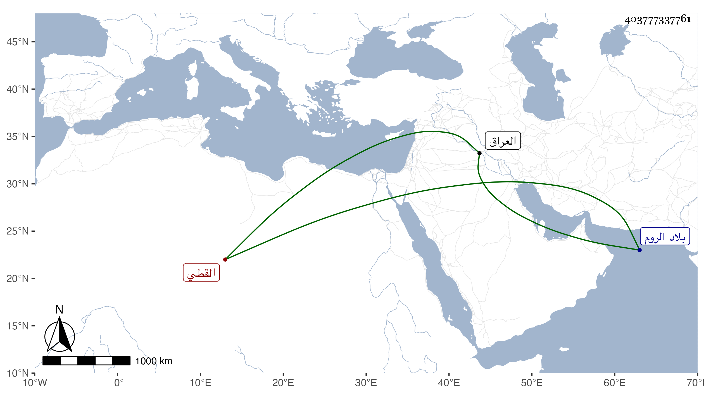

0902Sakhawi.DawLamic.ITO20230111-ara1.EIS1600.403777337761
Biography ID: 403777337761
716
منصور بن الصفي القطي . كان أبوه من الكتبة فنشأ ابنه على طريقته وتخرج به وبغيره في ذلك وخدم في بعض جهات المفرد ثم في ديوان الأمير قانم التاجر بحيث عرف به وسافر معه إلى العراق حين سافر في الأيام الظاهرية جقمق رسولا لجهان شاه بن قرا يوسف ثم إلى الروم حين توجهه إلى مراد بك ابن عثمان ثم الحجاز مرة بعد أخرى حين كان أميرا فيهما فأثرى وتمول جدا واستقر في عمالة السابقية ثم اتصل بالزين الأستادار وتزوج ابنته ورقاه لنظر المفرد بل ولي الوزارة بعده عودا على بدء في الأيام الإينالية ثم الأستادارية كذلك بل وليها مرة ثالثة في أيام الظاهر خشقدم مسئولا فيها وبالغ في تقوية يده وإلباسه في كل شهر خلعة جليلة مع إركابه فرسا هائلا والإكثار من الدعاء له وربما جاءه لبيته واستمر على ذلك أزيد من سنة ثم قبض عليه بدون ذنب ظاهر وصادره وأهانه بالضرب والحديد وحكم فيه أعداءه وآل أمره إلى أن أمر المالكي بقتله فتقل عند خيمة الغلمان في يوم الأربعاء العشرين من شوال سنة سبعين بعد عمل مستند لقتله ارتكبوا فيه أمورا خطيرة وحمل في تابوت ثم غسل وصلي عليه جماعة ثم دفن بتربة في الصحراء حذاء أمه وكانت فيما قيل خيرة تسمى فاطمة ابنة أحمد بن علي عريقة في الإسلام ولم يكمل الأربعين وسمع منه التلفظ بالشهادتين حين القتل وبعده وأكثر التلاوة قبل ذلك وتزايد الصراخ عليه من العامة وأسمعوا أخصامه خصوصا ابن كاتب غريب من السب والمكروه ما الله به عليم ، وقد عمر بجوار المدرسة الشريفية من حارة بهاء الدين قبل الولاية وبعدها وبغيرها دورًا كثيرة وفتح في أسفل السور بابا من جهة ظاهر بيته انتفع به في الاستطراق وصار يعرف به وقرب جماعة من الخيار كالشمس المسيري وكان يقرأ عليه في أبي شجاع ونحوه ويحسن إليه وجماعة برسم التلاوة للقرآن عنده في كل يوم والشهابين ابن أبي السعود والحجاري وكان كثير البر له وأوذي بسببه من جماعته طائفة بحيث مات بعضهم وراج آخرون بما كان مدخرا عندهم عفا الله عنه وإيانا .
